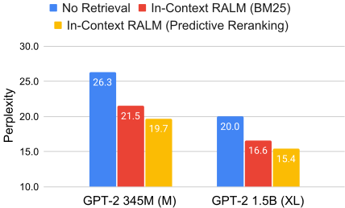
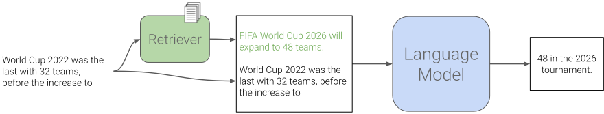
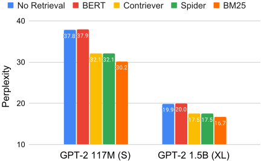
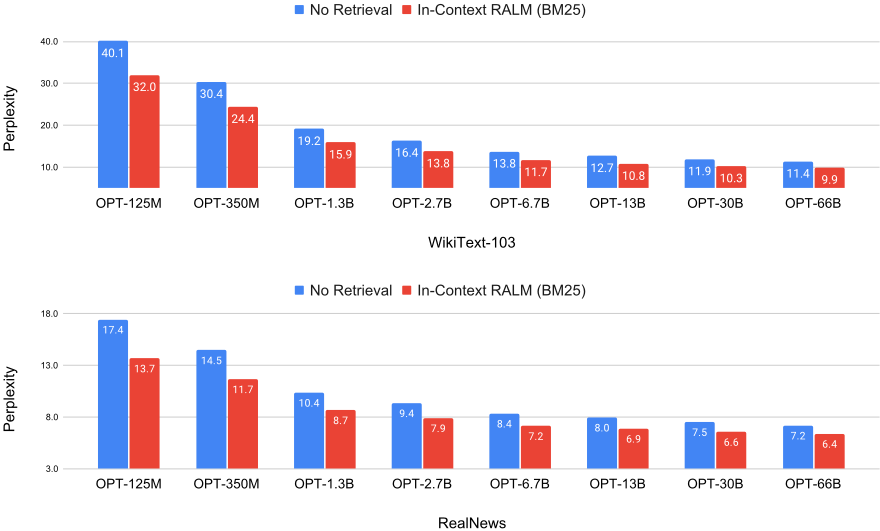
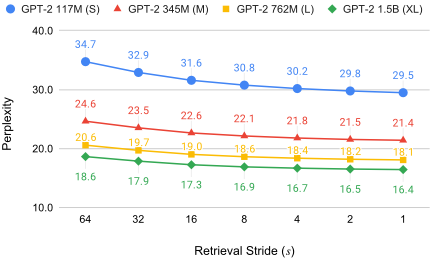
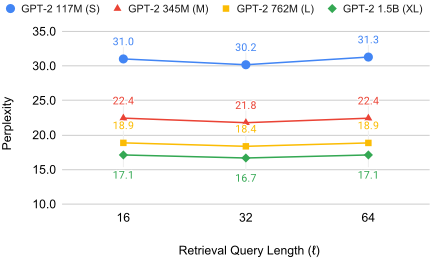
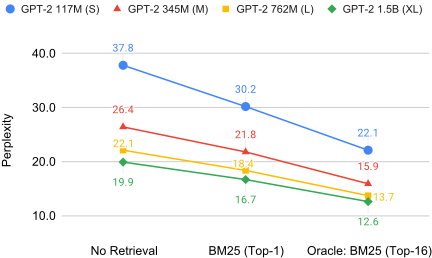
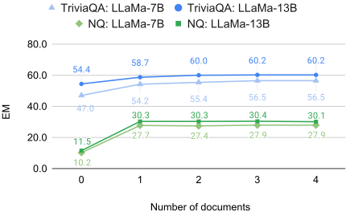
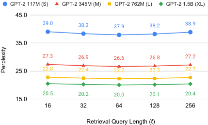
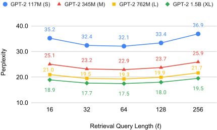

In-Context 检索增强语言模型（In-Context RALM）
现有检索增强语言模型（RALM）方法大多要修改 LM 架构并重新训练，部署复杂，对只能通过 API 使用的模型不可行。论文提出 In-Context RALM：完全冻结模型，仅把检索到的文档拼接到输入前缀之前，并系统研究检索器选型、检索频率（stride）与查询长度、面向 LM 的重排序等设计选择。关键结论：用现成 BM25 检索器（短查询、高频检索）即可带来相当于模型参数量扩大 2-3 倍的困惑度增益，6.7B OPT 加检索后匹敌 66B OPT；再用 Predictive Reranker 可再获约 2 倍等效增益；ODQA 上 LLaMA-13B 仅靠两篇检索文档零样本提升 NQ 18 点以上。对团队的启示：不改模型、纯靠上下文组织与检索配置即可拿到大部分检索增强收益，且 BM25 是强而廉价的基线。
主流 LM 生成存在事实错误、缺乏来源溯源、无法纳入训练后新知识的问题；已有 RALM 方案（RETRO、kNN-LM、REALM 等）通过修改架构或微调来融入检索文档，部署复杂且对 API-only 模型不可行。论文要回答：在不改架构、不做任何训练的前提下，仅靠把检索文档放进输入上下文，现成 LM 能获得多大收益，以及哪些检索侧设计选择（检索器、检索频率、查询长度、重排序）最影响效果。
提出 In-Context RALM：文档读取环节零成本——把检索到的单个文档直接 prepend 到 LM 输入前缀之前（超出上下文长度时从输入开头截断），模型权重完全冻结。在文档选择侧做系统消融：(1) 对比 BM25 与 BERT mean-pooling、Contriever、Spider 等现成检索器；(2) 解耦并调节检索 stride s（每 s 个 token 检索一次）与查询长度 ℓ（取前缀最后 ℓ 个 token 作查询）；(3) 两种重排序：用可小于生成模型的 LM 对 BM25 top-16 文档做 zero-shot 重排序，以及用 LM 信号自监督训练 RoBERTa-base Predictive Reranker（只训练重排序器，LM 冻结）。另在 NQ/TriviaQA 上用 DPR 加冻结 LLaMA 验证下游 ODQA 效果。
现成检索器配置下，In-Context RALM 在全部五个语料上带来相当于模型参数量扩大 2-3 倍的 LM 增益，趋势在 110M 至 66B 参数规模均成立
6.7B OPT 加 BM25 检索后匹配 66B OPT 的困惑度；345M GPT-2 用 BM25 超过 762M GPT-2，用训练的 reranker 超过 1.5B GPT-2
BM25 在 LM 任务上明显优于 BERT mean-pooling、Contriever、Spider 等稠密检索器，且调用成本显著更低
检索越频繁困惑度越低（实验取 s=4；RETRO 用的 s=64 会导致困惑度大幅退化）；BM25 最优查询长度 ℓ=32，稠密检索器 ℓ=64
Predictive Reranking 进一步降困惑度：GPT-2 110M 从 29.6 降至 26.8，GPT-2 1.5B 从 16.6 降至 15.4；用 117M 小模型做 zero-shot 重排序与用生成模型自身重排序效果接近
ODQA 零样本：LLaMA-13B 加入两篇 DPR 文档后 NQ 从 12.0% 升至 31.0%（提升 18 点以上），TriviaQA 从 54.8% 升至 60.1%（提升 5 点以上）；大部分增益仅需两篇甚至一篇文档
与以往 RALM 工作（RETRO 的 chunked cross-attention、kNN-LM 的 token 级插值、REALM/RAG 类微调方法）不同，本文完全不修改 LM 架构、不训练 LM，把检索增强简化为纯输入拼接（in-context conditioning），因此适用于冻结模型和仅能 API 访问的场景。同时把文档选择作为独立自由度系统研究：解耦检索 stride 与查询长度（此前工作如 RETRO 强制二者相等）、发现 BM25 零样本优于稠密检索器、并提出用 LM 信号自监督训练的 Predictive Reranker。与同期 Shi et al. (2023) 的区别在于不训练专用检索器，专注现成检索器可获得的收益。
相关度级别：high
命中能力域：3.1 上下文工程与记忆 | 3.2 提示工程 | 3.5 评测与可靠使用
理由：直接命中 3.1：论文核心就是'不改模型、把检索文档组织进上下文'的 RAG 实现方式，并给出上下文截断、检索频率、查询长度、文档数量等可直接复用的工程参数，正属团队'上下文组织与管理'与'RAG/检索增强'范畴。方法机制是 in-context learning 的检索应用，关联 3.2。论文对 BM25 与稠密检索器的成本对比、stride 的效果-运行时权衡、用小模型重排序以支持 API-only 模型等分析，对应 3.5 的成本与效率优化及实证研究。对'把模型用好而非训练模型'的团队定位而言，这是方法论上高度对口的基础工作。
建议动作：深入精读并做内部分享
arXiv:2302.00083v3 [cs.CL] 2023年8月1日
上下文检索增强语言模型
Ori Ram ∗ Yoav Levine ∗ Itay Dalmedigos Dor Muhlgay Amnon Shashua Kevin Leyton-Brown Yoav Shoham
AI21 Labs
{orir,yoavl,itayd,dorm,amnons,kevinlb,yoavs}@ai21.com
检索增强语言建模（RALM）方法在生成过程中使语言模型（LM）以接地语料库中的相关文档为条件，已被证明能显著提升语言建模性能。此外，它们还能缓解文本生成事实不准确的问题，并提供自然的来源归因机制。现有的 RALM 方法侧重于修改 LM 架构以便融合外部信息，这显著增加了部署的复杂性。本文考虑一种简单的替代方案，我们将其命名为 In-Context RALM（上下文内检索增强语言建模）：保持 LM 架构不变，将接地文档前置到输入中，而无需对 LM 进行任何进一步的训练。我们表明，基于现成通用检索器构建的 In-Context RALM 在不同模型规模和多样化语料库上均能带来出人意料的大幅 LM 性能提升。我们还证明，文档检索与排序机制可以针对 RALM 设定进行特化，从而进一步提升性能。我们的结论是，In-Context RALM 在提高 LM 接地普及率方面具有相当大的潜力，尤其是在必须不加修改地使用预训练 LM、甚至只能通过 API 访问的场景中。1
语言建模（language modeling, LM）的最新进展极大地提升了机器生成文本在广泛用例和领域中的实用性（Brown et al., 2020）。然而，使用 LM 生成文本的主流范式在获取外部知识方面存在固有限制。首先，LM 不与任何来源标注（source attribution）相关联，并且必须经过训练才能纳入训练期间未见过的最新信息。更重要的是，LM 往往会产生事实性不准确和错误（Lin et al., 2022; Maynez et al., 2020; Huang et al., 2020）。这一问题存在于任何 LM 生成场景中，当在不常见领域或私有数据上进行生成时，问题会进一步加剧。解决上述问题的一种有前景的方法是检索增强语言建模（Retrieval-Augmented Language Modeling, RALM），它通过以从外部知识源检索到的相关文档为条件，在生成过程中使 LM 接地。RALM 系统包含两个高层组件：（i）文档选择（document selection），即选择作为条件依据的文档集合；（ii）文档读取（document reading），即确定如何将所选文档融入 LM 的生成过程。
∗ 同等贡献。
1 我们的代码发布于 https://github.com/AI21Labs/in-context-ralm

近期提出的领先 RALM 系统往往侧重于改变语言模型架构（Khandelwal et al., 2020; Borgeaud et al., 2022; Zhong et al., 2022; Levine et al., 2022c; Li et al., 2022）。值得注意的是，Borgeaud et al. (2022) 提出了 RETRO，其文档读取是通过对 LM 架构进行非平凡修改来实现的，这需要进一步的训练，而文档选择则使用现成的冻结 BERT 检索器。尽管该论文的实验结果显示了令人印象深刻的性能提升，但对架构更改和专门再训练的需求阻碍了此类模型的广泛采用。

在本文中，我们表明一种非常简单的文档读取机制就能产生重大影响，而且通过使文档选择机制适应语言建模任务，也可以获得可观的收益。因此，我们表明，在使用现成 LM 的情况下（甚至仅通过 API 访问），也能实现 RALM 的诸多收益。具体而言，我们考虑了一个简单而强大的 RALM 框架，称为 In-Context RALM（在第 3 节中介绍），它采用零成本的文档读取机制：我们只是将选定的文档前置到 LM 输入文本的开头（图 2）。
第 4 节描述了我们的实验设置。为了展示我们框架的广泛适用性，我们在五个多样化的语料库上进行了 LM 实验：WikiText-103（Merity et al., 2016）、RealNews（Zellers et al., 2019），以及来自 The Pile（Gao et al., 2021）的三个数据集：ArXiv、Stack Exchange 和 FreeLaw。我们使用的开源 LM 参数量从 110M 到 66B 不等（来自 GPT-2、GPT-Neo、OPT 和 LLaMA 模型家族）。
在第 5 节中，我们评估了将现成检索器应用于我们框架的效果。在这种最小工作量的设定下，我们发现在所考察的所有文本语料库上，In-Context RALM 带来的 LM 性能提升相当于将 LM 的参数量增加 2 - 3 倍。在第 6 节中，我们研究了使文档排序适配 LM 任务的方法，这是一个相对未被充分探索的 RALM 自由度。我们的适配方法涵盖从使用一个小型 LM 对检索到的文档进行零样本（zero-shot）排序，到利用来自 LM 信号的自监督训练一个专用的双向重排序器（reranker）。这些方法在 LM 任务上带来了进一步的提升，相当于 LM 架构规模额外增加 2 倍。作为这些提升的一个具体例子，当采用现成的 BM25 检索器（Robertson and Zaragoza, 2009）时，经 In-Context RALM 增强的 345M 参数 GPT-2 优于 762M 参数的 GPT-2；而当采用我们训练的面向 LM 的重排序器时，则优于 1.5B 参数的 GPT-2（见图 1）。对于大模型规模，我们的方法甚至更为有效：采用现成检索器的 In-Context RALM 将 6.7B 参数 OPT 模型的性能提升到与 66B 参数 OPT 模型相当的水平（见图 4）。
在第 7 节中，我们展示了 In-Context RALM 在下游开放域问答（Open-Domain Question Answering, ODQA）任务中的适用性。
在一项同期工作中，Shi et al. (2023) 也提出将检索到的文本前置到输入中，以此来增强现成的 LM。他们的结果基于为语言建模训练一个专用检索器。相比之下，我们关注的是在该任务中使用现成检索器所能获得的提升。我们通过考察以下问题来展示这一更简单设定的显著收益：（1）哪种现成检索器最适合语言建模；（2）检索操作的频率；以及（3）最优查询长度。此外，我们通过引入两种重排序方法来提升现成检索的性能，这些方法在困惑度（perplexity）上带来了进一步的改善。
我们相信，In-Context RALM 可以在使 RALM 系统更强大、更普及方面发挥两个重要作用。首先，鉴于其简单的读取机制，In-Context RALM 可以作为一个干净的探针，用于开发专门针对 LM 任务的文档检索方法。这些方法进而可用于改进 In-Context RALM 以及其他目前使用通用检索器的更复杂的 RALM 方法。其次，由于它与现成 LM 兼容，In-Context RALM 有助于推动 RALM 系统的更广泛部署。
检索增强语言模型（RALM）方法大致可分为两大类模型：(i) 最近邻语言模型（nearest-neighbor language models，也称为 kNN-LM），以及 (ii) 检索-阅读模型（retrieve and read models）。我们的工作属于第二类，但其独特之处在于无需对语言模型（LM）进行任何进一步的训练。
最近邻语言模型 kNN-LM 方法由 Khandelwal et al. (2020) 首次提出。作者提出了一种简单的推理时模型，该模型在两个下一词元（next-token）分布之间进行插值：一个由 LM 自身诱导产生，另一个由检索语料库中在 LM 嵌入空间里与查询词元最接近的 k 个邻居诱导产生。Zhong et al. (2022) 提出了一个训练此类模型的框架。尽管他们展示了 kNN-LM 带来的显著收益，但该方法需要在语料库中存储每个词元的表示，即使对于像 Wikipedia 这样的小型语料库而言，这也是一个代价高昂的要求。尽管已有众多方法被提出来缓解这一问题（He et al., 2021; Alon et al., 2022），但将其中任何一种方法扩展到大规模语料库仍然是一个悬而未决的挑战。
检索-阅读模型 这一类 RALM 在文档选择组件与文档阅读组件之间建立了清晰的划分。所有先前的工作都涉及对 LM 的训练。我们首先描述利用这一方法解决下游任务的工作，随后提及面向 RALM 的工作。Lewis et al. (2020) 与 Izacard and Grave (2021) 针对下游知识密集型任务微调了编码器-解码器（encoder-decoder）架构。Izacard et al. (2022b) 探索了预训练此类模型的多种不同方式，而 Levine et al. (2022c) 在句子嵌入空间中的最近邻簇上预训练了一个自回归 LM。Levine et al. (2022a) 通过将一个冻结的 LM 作为阅读器进行提示微调（prompt-tuning），展示了具有竞争力的开放域问答性能。Guu et al. (2020) 预训练了 REALM——一种检索增强的双向掩码语言模型（masked LM），随后针对开放域问答进行了微调。与本文最接近的工作——其聚焦于语言建模任务——是 RETRO（Borgeaud et al., 2022），该方法修改了自回归 LM，使其能够通过分块交叉注意力（chunked cross-attention）关注相关文档，从而为模型引入了新的参数。我们的 In-Context RALM 与该类模型中先前工作的差异体现在两个关键方面：
语言模型（LM）定义了词元序列上的概率分布。给定这样一个序列 x 1 , ..., x n ，对其概率建模的标准方式是下一词元预测（next-token prediction）：p ( x 1 , ..., x n ) = ∏ n i =1 p ( x i | x <i ) ，其中 x <i := x 1 , ..., x i - 1 是位于 x i 之前的词元序列，也称为其前缀（prefix）。这种自回归模型通常通过一个由参数集合 θ 参数化的、经过学习的 Transformer 网络（Vaswani et al., 2017）来实现：
其中，条件概率通过采用因果自注意力掩码（causal self-attention mask）来建模（Radford et al., 2018）。值得注意的是，GPT-2（Radford et al., 2019）、GPT-3（Brown et al., 2020）、OPT（Zhang et al., 2022）或 Jurassic1（Lieber et al., 2021）等领先的 LM 都遵循这种简单的参数化方式。
检索增强语言模型（Retrieval augmented language models, RALMs）增加了一个从外部语料库 C 中检索一个或多个文档的操作，并使上述 LM 的预测以这些文档为条件。具体而言，在预测 x i 时，从 C 中进行的检索操作取决于其前缀：R C ( x <i ) ，因此最一般的 RALM 分解形式为：p ( x 1 , ..., x n ) = ∏ n i =1 p ( x i | x <i , R C ( x <i )) 。为了使 LM 的生成以检索到的文档为条件，先前的 RALM 方法使用了专门的架构或算法（见 §2）。受上下文学习（In-Context Learning）成功应用的启发（Brown et al., 2020; Dong et al., 2023），In-Context RALM 指的是下面这种具体而简单的方法：将检索到的文档 2 拼接到 Transformer 的输入中、置于前缀之前（见图 2），该方法不涉及修改 LM 的权重 θ ：
其中 [ a ; b ] 表示字符串 a 和 b 的拼接。
由于常见的基于 Transformer 的 LM 实现所支持的输入序列长度有限，当文档与输入序列拼接后的长度超过该限制时，我们会从 x 的开头移除词元，直到总输入长度等于模型所允许的长度。由于我们检索到的文档是长度有限的段落，因此 x 总能留下足够的上下文（见 §4.3）。
下面我们详细介绍 RALM 系统中常见的两种实用设计选择。在 §5 中，我们将在 In-Context RALM 的设定下研究这些选择的影响。
检索步长（Retrieval Stride） 虽然在上述公式化中，检索操作可以在每个生成步骤进行，但由于调用检索器的开销，以及生成过程中需要替换 LM 前缀中的文档，我们可能希望每 s > 1 个词元才执行一次检索。我们将 s 称为检索步长（retrieval stride）。由此得到以下 In-Context RALM 公式化（当 s = 1 时退化为式 (2)）：
其中 n s = n/s 为检索步长的数量。
值得注意的是，在该框架中，每次检索操作的运行时开销由两部分组成：(a) 运行检索器本身，以及 (b) 重新计算前缀的嵌入（embeddings）。在 §5.2 中，我们表明使用较小的检索步长（即尽可能频繁地检索）优于使用较大的步长（尽管采用较大步长的 In-Context RALM 相对于 vanilla LM 已经能带来巨大提升）。因此，检索步长的选择最终是运行时间与性能之间的权衡。
2 我们始终使用单个文档，但在概念上支持多个文档同样很简单。
检索查询长度（Retrieval Query Length） 虽然上述检索查询原则上依赖于所有前缀词元 x ≤ s · j，但前缀最末端的信息通常与所生成的词元最为相关。如果检索查询过长，这些信息就可能被稀释。为避免这种情况，我们将步长 j 处的检索查询限制为前缀的最后 ℓ 个词元，即使用 q s,ℓ j := x s · j - ℓ +1, ..., x s · j。我们将 ℓ 称为检索查询长度（retrieval query length）。请注意，先前的 RALM 工作将检索步长 s 与检索查询长度 ℓ 耦合在一起（Borgeaud et al., 2022）。在 §5 中，我们表明强制 s = ℓ 会降低 LM 的性能。将这些超参数整合到 In-Context RALM 公式化中，可得
我们现在描述实验设置，包括我们使用的所有模型及其实现细节。
我们在五个多样化的语言建模数据集和两个常见的开放域问答数据集上评估了 In-Context RALM 的有效性。
语言建模 第一个 LM 数据集是 WikiText-103（Merity et al., 2016），该数据集已被广泛用于评估 RALM（Khandelwal et al., 2020; He et al., 2021; Borgeaud et al., 2022; Alon et al., 2022; Zhong et al., 2022）。其次，我们从 The Pile（Gao et al., 2021）中选择了三个涵盖不同主题的数据集：ArXiv、Stack Exchange 和 FreeLaw。最后，我们还研究了 RealNews（Zellers et al., 2019），因为 The Pile 缺少仅专注于新闻的语料库（而新闻本质上是一个知识密集型领域）。
开放域问答 为了同时在下游任务上评估 In-Context RALM，我们使用了 Natural Questions（NQ；Kwiatkowski et al. 2019）和 TriviaQA（Joshi et al., 2017）这两个开放域问答数据集。
我们使用 Transformers 库（Wolf et al., 2020）实现了我们的代码库。我们的稠密检索代码基于 DPR 代码仓库（Karpukhin et al., 2020）。
3 所有模型均可通过 https:// huggingface.co/ 使用
4 在初步实验中，我们观察到当使用 2,048 的序列长度时，In-Context RALM 带来了类似的提升。为了便于在所有模型之间进行直接比较，我们使用了 1,024 的序列长度。

检索语料库 对于 WikiText-103 和 ODQA 数据集，我们使用了 2018 年 12 月 20 日的 Wikipedia 语料库，该语料库由 Karpukhin et al. (2020) 采用 Chen et al. (2017) 的预处理方法进行了标准化。为避免污染，我们从语料库中找出并移除了 WikiText-103 开发集和测试集的全部 120 篇文章。对于其余数据集，我们使用其训练数据作为检索语料库。与 Karpukhin et al. (2020) 类似，我们的检索语料库由互不重叠的 100 词段落组成（对绝大多数段落而言，这相当于少于 150 个 token）。因此，在将检索到的段落输入模型时，我们将其截断至 256 个 token，但它们通常要小得多。
检索 对于稀疏检索，我们使用了 Pyserini 库（Lin et al., 2021）。对于稠密检索，我们使用 FAISS（Johnson et al., 2021）进行精确搜索。
我们现在通过实验证明，尽管其文档读取机制十分简单，上下文检索增强语言模型（In-Context RALM）在我们多样化的评测套件上均能带来显著的语言模型（LM）性能提升。本节我们首先研究现成检索器在 In-Context RALM 中的有效性；随后在 §6 中，我们将展示通过针对 LM 任务定制文档排序函数，还可以进一步获得 LM 性能提升。
本节的实验为我们提供了应用 In-Context RALM 的推荐配置：使用一个接收 ℓ = 32 个查询 token 的稀疏 BM25 检索器，并尽可能频繁地应用该检索器。实际操作中，我们每 s = 4 个 token 检索一次（ℓ 和 s 的定义见 §3）。表 1 显示，对于 GPT-2 模型，在所有被考察的语料库上，采用现成检索器的 In-Context RALM 对 LM 困惑度的改善幅度之大，足以使其与规模大 2-3 倍的模型相当。图 4 以及表 2 和表 5 表明，这一趋势在直至 66B 参数的各模型规模上均成立，且在 WikiText-103 和 RealNews 上均是如此。
| Model | Retrieval | Reranking | WikiText-103 word ppl | RealNews token ppl | ArXiv token ppl | Stack Exch. token ppl | FreeLaw token ppl |
|---|---|---|---|---|---|---|---|
| GPT-2 S | - | - | 37.5 21.3 | 12.0 | 12.8 | 13.0 | |
| GPT-2 S | BM25 §5 | - | 29.6 | 16.1 | 10.9 | 11.3 | 9.6 |
| GPT-2 S | BM25 | Zero-shot §6.1 | 28.6 | 15.5 | 10.1 | 10.6 | 8.8 |
| GPT-2 S | BM25 | Predictive §6.2 | 26.8 | - | - | - | - |
| GPT-2M | - | - | 26.3 | 15.7 | 9.3 | 8.8 | 9.6 |
| GPT-2M | BM25 §5 | - | 21.5 | 12.4 | 8.6 | 8.1 | 7.4 |
| GPT-2M | BM25 | Zero-shot §6.1 | 20.8 | 12.0 | 8.0 | 7.7 | 6.9 |
| GPT-2M | BM25 | Predictive §6.2 | 19.7 | - | - | - | - |
| GPT-2 L | - | - | 22.0 | 13.6 | 8.4 | 8.5 | 8.7 |
| GPT-2 L | BM25 §5 | - | 18.1 | 10.9 | 7.8 | 7.8 | 6.8 |
| GPT-2 L | BM25 | Zero-shot §6.1 | 17.6 | 10.6 | 7.3 | 7.4 | 6.4 |
| GPT-2 L | BM25 | Predictive §6.2 | 16.6 | - | - | - | - |
| - | - | 20.0 | 12.4 | 7.8 | 8.0 | 8.0 | |
| BM25 §5 | - | 16.6 | 10.1 | 7.2 | 7.4 | 6.4 | |
| GPT-2 XL | BM25 | Zero-shot §6.1 | 16.1 | 9.8 | 6.8 | 7.1 | 6.0 |
| BM25 | Predictive §6.2 | 15.4 | - | - | - | - |
| Model | Retrieval | Reranking | WikiText-103 word ppl | RealNews token ppl | ArXiv token ppl | Stack Exch. token ppl | FreeLaw token ppl |
| Model | Retrieval | WikiText-103 word ppl |
|---|---|---|
| LLaMA-7B | - BM25, §5 | 9.9 8.8 |
| LLaMA-13B | - BM25, §5 | 8.5 7.6 |
| LLaMA-33B | - BM25, §5 | 6.3 6.1 |
| Model | Retrieval | WikiText-103 word ppl |
我们尝试了多种现成的通用检索器，发现稀疏（词法）BM25 检索器（Robertson and Zaragoza, 2009）优于三种流行的稠密（神经）检索器：自监督检索器 Contriever（Izacard et al., 2022a）和 Spider（Ram et al., 2022），以及 RETRO 系统（Borgeaud et al., 2022）中所用的基于 BERT 嵌入平均池化的检索器。我们针对每个检索器，对查询长度 ℓ 进行了最小化的超参数搜索，发现 ℓ = 32 对 BM25 而言最优（图 6），而 ℓ = 64 对稠密检索器效果最佳（图 9、图 10）。
图 3 比较了 In-Context RALM 采用这四种通用检索器时的性能提升。BM25 检索器明显优于所有稠密检索器。这一结果与先前的工作一致，先前工作表明，在零样本（zero-shot）设置下，BM25 在广泛的各种任务上都优于神经检索器（Thakur et al., 2021）。这一结果使 In-Context RALM 更具吸引力，因为应用 BM25 检索器的成本显著低于神经检索器替代方案。

我们研究了改变检索步长 s（即连续两次检索操作之间的词元数量）所带来的影响。图 5 显示，随着检索操作变得更加频繁，语言模型（LM）的性能得到提升。这印证了这样一种直觉：检索查询距离所生成的词元越近，检索到的文档就越相关。当然，每次检索操作都会带来运行时开销。为了在性能与运行时间之间取得平衡，我们在实验中采用 s = 4。作为对比，RETRO 采用了 s = 64 的检索频率（Borgeaud et al., 2022），这会导致困惑度大幅下降。直观地说，以高频率（低检索步长）进行检索，能够使 LM 建立在分辨率更高的依据之上。
我们还研究了改变 ℓ（即 BM25 检索查询的长度）所带来的影响。图 6 揭示了一种有趣的权衡关系，并在约 32 个词元的查询长度附近存在一个最佳平衡点。针对稠密检索器的类似实验见附录 A。我们推测，当检索查询过短时，其中包含的输入上下文不足，从而降低了所检索文档的相关性。相反，过度增长检索查询会弱化前缀最末端的词元，稀释了查询与 LM 任务的相关性。
Since In-Context RALM uses a fixed document reading component by definition, it is natural to ask whether performance can be improved by specializing its document retrieval mechanism to the LM task. Indeed, there is considerable scope for improvement: the previous section considered conditioning the model only on the first document re-


trieved by the BM25 retriever. This permits very limited semantic understanding of the query, since BM25 is based only on the bag of words signal. Moreover, it offers no way to accord different degrees of importance to different retrieval query tokens, such as recognizing that later query tokens are more relevant to the generated text.
In this section, we focus on choosing which document to present to the model, by reranking the topk documents returned by the BM25 retriever. 5 We use Figure 7 as motivation: it shows the large potential for improvement among the top16 documents returned by the BM25 retriever. We act upon this motivation by using two rerankers. Specifically, in §6.1 we show performance gains across our evaluation suite obtained by using an LM to perform zero-shot reranking of the topk BM25 retrieved documents (results in third row for each of the models in Table 1). Then, in §6.2 we show that training a specialized bidirectional reranker of the topk BM25 retrieved documents in a selfsupervised manner via the LM signal can provide further LM gains (results in forth row for each of the models in Table 1).
5 In both §6.1 and §6.2 we use k = 16 .

首先，我们在 In-Context RALM 设定中使用现成的语言模型（LM）作为文档重排序器。形式化地，对于由 LM 输入 x 前缀中最后 ℓ 个 token 组成的查询 q，设 { d 1 , ..., d k } 为 BM25 返回的 top-k 文档。对于第 j 次检索迭代，设待生成文本为 y := x s · j +1 , ..., x s · j + s 。理想情况下，我们希望找到使待生成文本概率最大化的文档 d i ∗ ，即
然而，在测试时我们无法获取 y 的 token。作为替代，我们使用最后的前缀 token（这些 token 在测试时是可获取的），记为 y ′ ，来进行重排序。形式化地，设 s ′ 为一个超参数，用于确定参与重排序的前缀 token 数量。我们定义 y ′ := x s · j - s ′ +1 , ..., x s · j （即位于 y 之前、长度为 s ′ 的片段），并选择文档 d ˆ i 使得
| Model | Reranking Model | WikiText-103 word ppl | RealNews token ppl |
|---|---|---|---|
| GPT-2 110M (S) GPT-2 345M (M) | 20.8 20.8 | 12.1 12.0 | GPT-2 345M (M) |
| GPT-2 110M (S) GPT-2 762M (L) | 17.7 17.6 | 10.7 10.6 | GPT-2 762M (L) |
| GPT-2 110M (S) GPT-2 1.5B (XL) | 16.2 16.1 | 9.9 9.8 | GPT-2 1.5B (XL) |
| Model | Reranking Model | WikiText-103 word ppl | RealNews token ppl |
其主要动机在于：由于 BM25 是一种词法检索器，我们希望引入由 LM 诱导出的语义信号。此外，这种重排序与 Sachan et al. (2022) 针对开放域问答提出的重排序框架在概念上有相似之处，其中 y ′ （即最后的前缀 token）可以类比为他们的“问题”。
需要注意的是，我们的零样本（zero-shot）重排序并不要求用于重排序的 LM 与用于生成的 LM 是同一个模型（即，式 (6) 中由 ϕ 参数化的 LM 不必是式 (2) 中由 θ 参数化的 LM）。这一观察结果开启了使用更小（因而更快）的模型进行重排序的可能性，这一点之所以重要，主要有两个原因：(i) 对 k 个文档进行重排序需要 k 次前向传播；(ii) 它使我们的方法能够应用于无法获取实际 LM 对数概率的情形（例如，当 LM 通过 API 访问时）。 6
结果 在 WikiText-103 开发集上进行的小规模超参数搜索表明，最优查询长度为 s ′ = 16 ， 7 因此我们在后续实验中均采用该值。表 1 展示了让 LM 对 BM25 检索到的 top-16 文档执行零样本重排序的结果（每个模型的第三行）。显而易见，重排序始终取得了比直接采用检索器返回的第一个结果更好的效果。
6 注意，我们并不要求这两个模型共享相同的词表。
7 我们尝试了 s ′ ∈ { 4 , 8 , 16 , 32 } 。
表 3 表明，一个小型 LM（GPT-2 117M）可以用于为所有更大的 GPT-2 模型重排序文档，其性能与让每个 LM 为自身执行重排序大致相同，这支持了该方法对于仅能通过 API 访问的 LM 的适用性。
Next, we trained a reranker to choose one of the topk documents retrieved by BM25. We refer to this approach as Predictive Reranking , since the reranker learns to choose which document will help in 'predicting' the upcoming text. For this process, we assume availability of training data from the target corpus. Our reranker is a classifier that gets a prefix x ≤ s · j and a document d i (for i ∈ [ k ] ), and produces a scalar f ( x ≤ s · j , d i ) that should resemble the relevance of d i for the continuation of x ≤ s · j .
We then normalize these relevance scores:
and choose the document d ˆ i such that
Collecting Training Examples To train our predictive reranker, we collected training examples as follows. Let x ≤ s · j be a prefix we sample from the training data, and y := x s · j +1 , ..., x s · j + s be the text for generation upcoming in its next stride. We run BM25 on the query q s,ℓ j derived from x ≤ s · j (see §3.2) and get k documents { d 1 , ..., d k } . For each document d i , we then run the LM to compute p θ ( y | [ d i ; x ≤ s · j ]) similar to Eq. (4).

Training Our reranker was a fine-tuned RoBERTa-base (Liu et al., 2019) that trained for 10,000 steps with a peak learning rate of 10 - 5 and a batch size of 32. Overall, we created 300,000 examples from the training set of WikiText-103 as explained above. The loss function we use to train the reranker follows previous work (Guu et al., 2020; Lewis et al., 2020):
-
Note that unlike those works, we train only the reranker ( p rank), keeping the LM weights θ frozen.
Results Table 1 shows the result of our predictive reranker, trained on WikiText-103. Specifically, we trained it with data produced by GPT-2 110M (S), and tested its effectiveness for all GPT-2 models. Weobserved significant gains obtained from Predictive Reranking. For example, the perplexity of GPT2 110M (S) improved from 29.6 to 26.8, and that of GPT-2 1.5B (XL) improved from 16.6 to 15.4. This trend held for the other two models as well. Overall, these results demonstrate that training a reranker with domain-specific data was more effective than zero-shot reranking (Section 6.1). Note that these results-while impressive-still leave room for further improvements, compared to the top-16 BM25 oracle results (see Figure 7). Moreover, the oracle results themselves can be improved by retrieving k > 16 documents via a BM25 retriever, or by training stronger retrievers dedicated to the RALM task. We leave this direction for future work.
| Model | Retrieval | NQ | TriviaQA |
|---|---|---|---|
| LLaMA-7B | - DPR | 10.3 | 47.5 |
| LLaMA-13B | - | 28 | 56 |
| 12 | 54.8 | ||
| DPR | 31 | 60.1 | |
| LLaMA-33B | - | 13.7 | 58.3 |
| LLaMA-33B | DPR | 32.3 | 62.7 |
| Model | Retrieval | NQ | TriviaQA |
从外部来源进行检索已成为知识密集型任务（如事实性问答、事实核查等；Petroni et al. 2021）中的常见做法。与此同时，语言模型（LM）生成能力的近期突破使得 LM 能够生成有用的长文本。然而，事实性错误仍然是机器生成文本常见的不足之处，而缺乏直接的出处信息也使得机器生成的文本难以令人信任。这使得语言建模成为知识落地（knowledge grounding）一个既有前景又十分紧迫的新应用领域，也为推广检索增强语言模型（RALM）方法提供了动机。当然，先前的研究已经对 RALM 进行过探索，但它尚未得到广泛部署。一个可能的原因是，现有方法依赖于对 LM 进行微调，这通常既困难又成本高昂，对于只能通过 API 访问的 LM 而言甚至是不可行的。
本文提出了上下文内检索增强语言模型（In-Context RALM）框架，使冻结的现成 LM 能够从检索中受益。我们证明了仅使用通用检索器即可获得显著的性能提升，并表明通过针对 LM 的设置定制文档选择策略，还可以获得额外的提升。Muhlgay et al. (2023) 的近期工作表明，In-Context RALM 确实能够提升大型 LM 的事实性。
未来工作仍存在若干可进一步改进的方向。首先，本文仅考虑了将单个外部文档前置到上下文中的情形；添加更多文档可能带来进一步的提升（例如，采用 Ratner et al. 2022 的框架）。其次，我们每隔固定的 s 个 token 检索一次文档，但我们认为，通过更稀疏地执行检索（例如仅当专用模型预测需要检索时才进行检索），有望在延迟和成本方面获得大幅收益。
我们发布了本工作中所使用的代码，供社区使用并在此基础上加以改进。我们希望这能推动对 RALM 的进一步研究，从而使其得到更广泛的采用。
图 9 和图 10 展示了针对现成密集检索器（分别为 BERT 和 Contriever）的最优查询长度 ℓ 的消融实验。我们省略了 Spider 的结果，因为其结果与 Contriever 的结果几乎完全相同。一致地，使用 ℓ = 64（token）是最优的。这与我们针对 BM25 进行的类似实验（参见图 6）形成对比，在该实验中 ℓ = 32 是最优的。
表 5 给出了在 WikiText-103 和 RealNews 上将 In-Context RALM 应用于 GPT-Neo 模型家族各模型的结果。
闭卷设置 对于闭卷设置，我们采用 Touvron 等人（2023）的提示：
回答这些问题：Q: 谁获得了第一个诺贝尔物理学奖？A:
开卷设置 对于开卷设置，我们将上述提示扩展如下：
诺贝尔奖
包括 42 位瑞典作家、艺术家和文学评论家在内的一群人对这一决定表示抗议，他们原本期望列夫·托尔斯泰获奖。包括 Burton Feldman 在内的一些人批评了该奖项，因为他们……
诺贝尔生理学或医学奖
在过去半个世纪中，科学家以团队形式开展工作的趋势日益增强，由此导致了一些颇具争议的落选情况。阿尔弗雷德·诺贝尔于 1833 年 10 月 21 日出生于瑞典斯德哥尔摩的一个工程师家庭……
根据这些文本，回答这些问题：Q: 谁获得了第一个诺贝尔物理学奖？A:
| Model | Retrieval | Wiki-103 word ppl | RealNews token ppl |
|---|---|---|---|
| GPT-Neo 1.3B | - BM25, §5 | 17.5 14.6 | 12.3 9.9 |
| - BM25, §5 | 15.1 12.8 | ||
| GPT-Neo 2.7B | 11.0 | ||
| - | 9.0 | ||
| GPT-J 6B | 11.6 | 9.2 | |
| GPT-J 6B | BM25, §5 | 10.0 | 7.7 |
| Model | Retrieval | Wiki-103 word ppl | RealNews token ppl |

